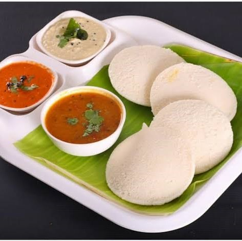

Idli Recipe

Ingredients:
- 2 cups idly rice
- 1 cup urad dal (black gram)
- 1/2 teaspoon fenugreek seeds
- 1 teaspoon salt
Instructions:
- Wash and soak idly rice, urad dal, and fenugreek seeds separately for 6 hours.
- Grind urad dal to a smooth batter and rice to a slightly grainy consistency.
- Mix both batters together, add salt, and mix well.
- Cover and ferment the batter overnight or for at least 8 hours.
- Pour the batter into idly molds.
- Steam the idlis for 10-12 minutes or until a toothpick inserted into the center comes out clean.
- Remove from molds, serve hot, and enjoy your homemade idlis!